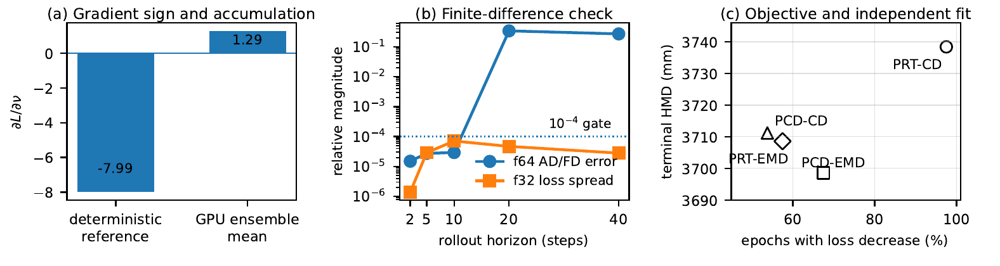
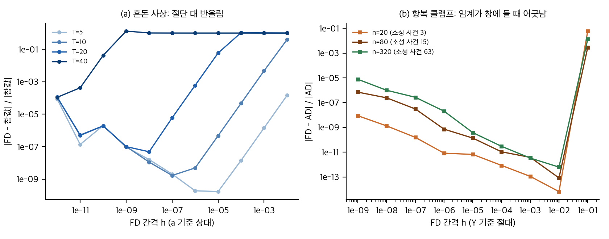
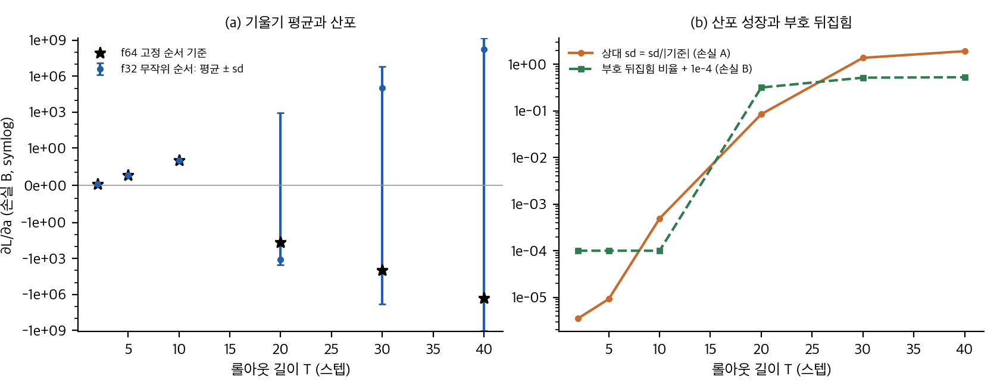
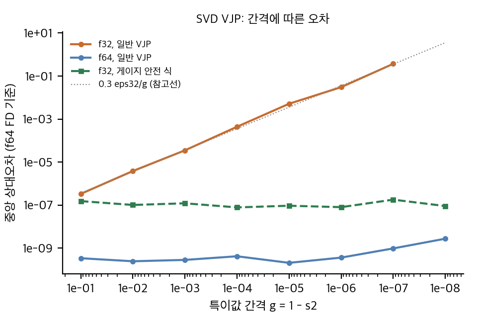

paper/paper.pdf, 텍스트 paper/paper.txt(pdftotext -layout)Taichi 기반 MLS-MPM 식별 문제 두 개(탄소성 DPSI, 입상 땅파기 DDBot)에서 세 가지를 보입니다. GPU 원자 덧셈의 순서가 긴 롤아웃의 기울기 부호를 바꾸고, 유한차분 검사는 롤아웃이 길어질수록 믿기 어려워지며, 관측·손실 설계가 최적화 결과와 독립 평가 순위를 바꿉니다. 결정론 고정소수점 누적을 제안합니다. 핵심 공백은 f64 AD/FD 불일치 0.34(20 스텝)의 원인을 FD 오차와 AD 오차로 나누지 않은 것입니다.
미분 가능 시뮬레이터로 식별, 궤적 최적화, 기술 학습, 형상 설계를 할 때 기울기는 긴 접촉 롤아웃을 거쳐 계산됩니다. 저자들은 같은 수치 연산(P2G 누적, 역방향 scatter, 관측 이산화)이 이 모든 응용에 공통으로 있다고 봅니다. 따라서 식별 실험은 대표 사례입니다. 이 주장은 식별 두 사례로만 검증되었으므로(결론 절의 한계 문단), 궤적·형상 최적화로의 일반화는 저자의 추론입니다.
analysis/table_check.py).
논문 Fig. 2: (a) 결정론 기준과 GPU 앙상블 평균의 기울기, (b) DPSI f64 AD/FD 최악 오차와 f32 손실 산포(롤아웃 2–40 스텝), (c) 목적함수별 강하 비율과 독립 HMD. © 저자, CC BY 4.0. 원문 https://arxiv.org/abs/2609.34666
Table II (DPSI, f64 AD/FD 최악 상대 불일치, f32 손실 산포, FD 시간):
| 스텝 | f64 최악 AD/FD | f32 손실 산포 V | FD 시간 |
|---|---|---|---|
| 2 | 4.4e-6 – 1.5e-5 | 2.2e-7 – 1.4e-6 | 25 s |
| 5 | 2.75e-5 | 2.9e-5 | 38 s |
| 10 | 2.93e-5 | 7.1e-5 | 59 s |
| 20 | 3.41e-1 | 4.7e-5 | 99 s |
| 40 | 2.70e-1 | 2.8e-5 | 178 s |
Table III (DPSI, 2 시드 × 2 정밀도, 에폭 80개 풀링):
| 목적함수 | 손실 감소 에폭 | 평균 HMD (mm) |
|---|---|---|
| PRT-CD | 78/80 (97.5%) | 3738.4 |
| PRT-EMD | 54/80 (67.5%) | 3698.6 |
| PCD-CD | 43/80 (53.8%) | 3711.2 |
| PCD-EMD | 46/80 (57.5%) | 3708.6 |
이 문서의 식은 논문에 없는 모형입니다(작성자 유도). 논문 수치와 맞는지는 §1에서, toy에서 맞는지는 §4에서 확인했습니다. 모든 toy는 numpy 1스레드, 각 1분 이내입니다.
재계산 코드: analysis/table_check.py → analysis/table_check_results.json.
모두 맞습니다.
Fisher 양측 검정(scipy fisher_exact):
단서: 80 에폭은 시드 2 × 정밀도 2 × 에폭 20으로 보입니다(본문에 명시 없음). 같은 실행 안의 에폭은 독립이 아니므로 p값은 과대입니다. 방향 차이 자체는 분명하지만, p값을 근거로 쓰면 안 됩니다.
14/58(f32) 대 13/42(f64): Fisher p = 0.50. 정밀도에 따른 차이는 없습니다. 논문이 "차이 없음"을 본다면 맞습니다. 다만 58과 42 셀은 같은 설정의 반복이라 독립이 아닙니다.
3738.4 대 3698.6 mm = 1.08%. 반복 분산이 없어 검정 불가입니다. 목적함수 순위 역전을 주장하려면 시드별 HMD가 필요합니다.
중심 차분 g_FD(h) = [L(θ+h) − L(θ−h)]/(2h)의 오차는
E(h) ≈ (h²/6)|L'''| + δ_L/h
이 U 곡선이 실험에서 보이면 FD 쪽 오차입니다. 어떤 h에서도 줄지 않는 고원이면 FD가 아니라 참조(AD) 또는 불연속입니다(§5).
λ를 스텝당 리아푸노프 지수, 롤아웃이 x_{k+1} = F(x_k, θ)일 때 ∂^n x_T/∂θ^n ~ e^(nλT)라고 둡니다. 이때:
예측의 한계: 이 모형은 스텝 간 혼돈(smooth chaos)만 다룹니다. 논문에서 2 스텝의 f64 오차 1e-5는 이 모형으로 설명되지 않습니다(모형 예측 ~1e-11). 그러므로 2 스텝의 1e-5는 FD 간격(섭동 크기)이 큰 탓이거나 AD 오차입니다.
논문 20 스텝 0.34와의 관계: 같은 모형으로 20 스텝 상대 오차 ~1이 되려면 λT* = 36이어야 해서 λ ≈ 1.8/스텝입니다. 논문의 한 "전역 스텝"은 MPM 하위 스텝 50개(DPSI)이므로 전역 λ가 큰 것은 가능합니다. 하지만 이 값은 검증되지 않았고, 40 스텝에서 오차가 0.27로 줄어드는 것은 단조 모형과 맞지 않습니다(§5 H4).
누적 순서 잡음 δ_k(스텝 k의 반올림 오차, 분산 σ0²)가 기울기에 미치는 영향을 봅니다.
따라서 상대 잡음이 1이 되는 T는 f32에서 ln(1/σ0)/λ ≈ 12/λ, f64에서 ≈ 32/λ입니다. λ = 0.49(toy)이면 f32 약 25 스텝, f64 약 65 스텝입니다.
논문과의 관계: 긴 롤아웃(DDBot 311 스텝)에서 기울기 부호 뒤집힘은 이 모형에서 예상되는 결과입니다. 결정론 누적은 이 중 순서에서 오는 부분을 없애 재현성을 줍니다. 그러나 f64 고정 순서 기준도 같은 혼돈 증폭을 겪으므로, 그 값이 "참 기울기"라는 근거는 없습니다. 논문 Table IV의 "결정론 5/5 비트 동일"은 재현성이고, 정확성은 리덕션 단독 테스트(f32 질량 오차 2e-10 대 1.4e-9)만 보여 줍니다.
정사각 A = U Σ Vᵀ, 손실이 U, V에 의존할 때(gΣ = 0):
gA = U [ (F∘(UᵀḠU − ḠᵀU)) Σ + Σ (F∘(VᵀV̄ − V̄ᵀV)) ] Vᵀ, F_ij = 1/(s_j² − s_i²) (i ≠ j), F_ii = 0.
Ḡ = ∂L/∂U = W V, V̄ = ∂L/∂V = Wᵀ U (손실 L = Σ W∘(UVᵀ)). toy에서 f64 중심 차분과 상대 1.6e-9로 맞습니다(svd_vjp_toy.py).
L이 UVᵀ에만 의존하면(극분해 인자, 예: fixed-corotated 응력 P = 2μ(F − R) + …의 R), 두 antisymmetric 블록이 B = −A를 만족합니다(수치로 확인: A = [[0, −1.75],[1.75, 0]], B = [[0, 1.75],[−1.75, 0]]).
그러면 Σ 항은 (F∘A)Σ − Σ(F∘A)가 되고, 성분은 F_ij A_ij (s_j − s_i) = A_ij/(s_i + s_j)입니다. 그러므로
gA = U (A ∘ G) Vᵀ, G_ij = 1/(s_i + s_j), G_ii = 0.
이 식에는 1/g 특이성이 없습니다. 단, 이 식은 L이 게이지 불변일 때만 맞습니다. 응력이 특이값 자체(예: von Mises의 주응력 함수)에 의존하면 Σ 항을 divided difference로 써야 하며, 그것도 간격에 따라 안정화가 필요합니다.
일반 식은 A와 B를 각각 계산합니다. 두 값은 독립된 반올림을 가지므로 상쇄가 깨지고, 남는 오차는
δgA ≈ U[(F∘δA)Σ + Σ(F∘δB)]Vᵀ, |F| ~ 1/(2 s g)
입니다. δA, δB ~ ε·|U||Ḡ|이므로 상대 오차는 c·ε/g (c ≈ 0.1–0.3).
toy 측정(중앙값, f64 FD 기준):
| 간격 g | f64 일반 | f32 일반 | f64 안전 | f32 안전 |
|---|---|---|---|---|
| 1e-1 | 3.4e-10 | 3.3e-7 | 1.1e-9 | 1.5e-7 |
| 1e-3 | 2.8e-10 | 3.5e-5 | 2.6e-10 | 1.2e-7 |
| 1e-5 | 2.1e-10 | 5.2e-3 | 5.7e-10 | 9.4e-8 |
| 1e-7 | 9.7e-10 | 0.37 | 4.3e-10 | 1.8e-7 |
| 1e-8 | 2.8e-9 | NaN | 3.5e-10 | 9.1e-8 |
f64에서 c·ε/g = 0.34를 풀면 g ≈ (0.1–0.3) × 2.2e-16 / 0.34 ≈ 6e-17–2e-16입니다. 이 간격은 f64 특이값 계산의 해상도(약 1e-16)보다 작아서, 특이값이 정확히 같다고 나옵니다. 그러면 F = 1/0 → 무한대이고, 논문은 NaN 보고가 없습니다. 따라서 SVD 항이 원인이라면 가드(F를 1/ε로 자르는 등)가 있었어야 하는데 논문에 그 기술이 없습니다. 가능성은 있지만 낮은 편입니다. 확인 방법은 §5 H3입니다.
analysis/*_toy.py)그림: report/figures/toy_fd_reliability.png, toy_reduction_sign.png, toy_svd_gap.png.
fd_chaos_toy.py)| T | 참값 ∂L/∂a | f64 AD 오차 | 고장 AD 오차 | FD 최선 오차 (h) | 모형 ε^(2/3)e^(2λT/3) |
|---|---|---|---|---|---|
| 2 | −0.374 | 0 | 1.04 | 2.5e-11 (1e-5) | 7.1e-11 |
| 5 | −3.87 | 1.3e-15 | 1.01 | 1.7e-10 (1e-5) | 1.9e-10 |
| 10 | −49.6 | 1.2e-14 | 1.00 | 1.7e-9 (1e-7) | 9.9e-10 |
| 20 | 2.22e4 | 1.9e-12 | 1.00 | 4.9e-8 (1e-8) | 2.7e-8 |
| 40 | 9.78e8 | 2.2e-7 | 1.00 | 1.1e-4 (1e-12) | 2.0e-5 |
fd_chaos_toy.py, 같은 파일)
직접 계산(toy): (a) 혼돈 사상 롤아웃에서 FD 상대오차의 U 곡선(T = 5–40), (b) 항복 클램프에서 FD와 AD의 차이(h가 사건 임계 거리를 넘을 때만 계단형으로 커짐).
reduction_order_toy.py)모형: N = 2000 기여, 매 스텝 float32 순차 합산. 정방향과 역방향은 서로 다른 무작위 순서. R = 400회 실행. a = 3.9.
| T | 손실 A: 기준 | 손실 A: f32 상대 sd | 손실 B: 부호 뒤집힘 |
|---|---|---|---|
| 2 | −0.374 | 3.6e-6 | 0 |
| 5 | −3.87 | 9.2e-6 | 0 |
| 10 | −49.6 | 4.9e-4 | 0 |
| 20 | 2.22e4 | 8.5e-2 | 0.32 |
| 30 | 4.96e6 | 1.4 | 0.52 |
| 40 | 9.78e8 | 1.9 | 0.53 |
이 toy의 결론은 "긴 롤아웃에서 f32 순서 잡음은 기울기의 부호와 크기를 완전히 바꾼다"입니다. 논문의 +1.29 대 −7.99가 같은 현상인지는, 논문이 앙상블 분산을 주지 않아 확인할 수 없습니다.

직접 계산(toy): (a) 손실 B의 기울기 평균 ± sd와 f64 기준(T = 2–40), (b) 손실 A의 상대 sd(로그)와 손실 B의 부호 뒤집힘 비율.
svd_vjp_toy.py)§3.3 표와 같습니다. 식 검증 최대 상대오차 1.6e-9(f64, g = 0.5).

직접 계산(toy): 특이값 간격에 따른 SVD VJP의 중앙 상대오차. 일반 식은 f32에서 간격에 반비례하고, 게이지 안전 식은 평평하다.
| 가설 | 예측 | 반대 신호 | 구분 실험 |
|---|---|---|---|
| H1 FD 절단(섭동이 큼) | 오차가 h²로 줄어듦, 작은 h에서 소멸 | h를 줄여도 고원이 유지됨 | h 사다리 1e-2 … 1e-10 (상대), 각 스텝에서 반복 |
| H2 항복 분기 전환(섭동이 임계를 넘음) | h 계단형, 최소 간격 아래에서 소멸. 스텝 수가 늘면 위험 증가 | 임계 거리가 모든 h에서 큼 | 소성 단계마다 시험 응력 절댓값과 항복력의 차이 최소값과 전환 횟수를 기록. 0.34가 나는 스텝에서 전환 여부 확인 |
| H3 SVD VJP 간격 민감도 | 오차 ∝ 1/g, h와 무관 | 간격이 1e-10보다 큰 입자만 있음 | 입자마다 특이값 간격 로그. 최소 간격이 1e-14 이하인지 확인. 안전 식으로 바꾸면 0.34가 1e-5 이하로 떨어지는지 확인 |
| H4 스무드 혼돈(λ 큼) | 상대 오차 ∝ ε^(2/3)e^(2λT/3), 2 스텝에서 ~1e-11 | 2 스텝에서 1e-5 | 접선 ∂x_T/∂x_0의 로그 기울기로 λ 측정. 2 스텝 오차가 1e-11 근처인지 확인 |
판정(작성자):
이 판정은 논문 데이터만으로는 확정할 수 없습니다. 확정하려면 §5의 측정이 필요하고, 그 측정은 논문 코드(없음)나 자체 구현 MPM이 있어야 합니다.
공식 코드를 찾지 못했습니다(02_prior_work.md §4). 그래서 논문의 주장을 표와 부록 수치로 검산하고(재계산, C-항목), 필요한 정보가 있는지 확인했습니다. 실행이나 설치는 하지 않았습니다.
pdftotext로 grep: license, copyright, creative, ©, cc by 0건). arXiv 생성 표지(arXiv:2609.34666v1 [cs.RO] 28 Sep 2026)만 있습니다.paper/paper.pdf(9쪽, 3.4 MB, 25 MB 미만이므로 gitignore 대상 아님). 본문, 부록 A–D, Table I–IV, Fig. 1–2를 모두 읽었습니다.analysis/table_check.py).analysis/*_toy.py, 03 §4).| 번호 | 논문 주장 (위치) | 검증 결과 | 판정 |
|---|---|---|---|
| C1 | GPU 원자 덧셈이 긴 롤아웃에서 DDBot ∂L/∂ν의 부호를 뒤집음: 앙상블 평균 +1.29 대 결정론 −7.99 (§III-A, Fig. 2a) | 앙상블 분산이 없어 +1.29가 0과 다른지 알 수 없습니다. 기준은 단일 실행입니다. toy(03 §4.3)에서는 긴 롤아웃에서 부호 뒤집힘이 실제로 나타나므로 방향은 그럴듯합니다 | 부분 지지(근거 부족) |
| C2 | 20 스텝 f64 AD/FD 불일치 0.34는 긴 롤아웃에서 FD가 믿기 어려워진 결과 (§III-B, Table II) | FD 오차와 AD 오차를 나누는 실험이 없습니다. 0.34가 FD 쪽이라는 증거도, AD 쪽이라는 증거도 없습니다. 03 §5의 H1–H4로 구분 가능합니다 | 미확인(핵심 공백) |
| C3 | 롤아웃이 길수록 반복 산포가 ∆L보다 빨리 커져 FD가 믿기 어려워짐 (§III-B) | Table II의 f32 산포는 10 스텝 최대, 40 스텝에서 2.8e-5로 감소. "빨리 커짐"과 맞지 않습니다. f64 판정에 f32 산포를 씁니다 | 지지 안 됨(지표 불일치) |
| C4 | 2 스텝에서 ∆L/V = 93–806, 10 스텝 이상 2–14 (§III-B) | Table II와 ∆L 역산(2e-5–1e-3)은 일관됩니다. 단, 산포는 f32입니다(C3) | 수치는 맞음, 해석 주의 |
| C5 | 결정론 누적으로 5개 대표 셀이 비트 단위로 같아짐 (§III-A, Table IV) | 5/5 반복 결과만 있습니다. 재현성을 보인 것이지 정확성을 보인 것이 아닙니다 | 지지(재현성 한정) |
| C6 | 결정론 누적이 f32 질량 오차를 줄임: 2.0e-10 대 1.44e-9 (부록 D-C) | 고정 순서 long double 기준의 단일 시험입니다. 다른 리덕션과 기울기 수준의 정확도는 없습니다 | 지지(범위 좁음) |
| C7 | 결정론 누적의 비트 예산 식 (20), DDBot P2G 27,440 입자: N=15, W=38, B=76, 여유 23 bit (부록 B-C) | 식 대입과 일치합니다(table_check.py §7). "가장 좁은 여유 31 guard bit"은 확인 못 함 |
지지 |
| C8 | 리덕션 예시 1.25+0.875+1.50 = 3.625, Q = 29 (식 17–19) | 재계산 일치 | 지지 |
| C9 | 입자 218 → 876에서 표면 셀 89 → 151, 배율 1.70, 새 입자 93%·89%가 기존 셀로 (§III-C, 부록 D-B) | 재계산 일치 (03 §1.1) | 지지 |
| C10 | PRT-CD가 80 에폭 중 78번 손실을 줄임 (97.5%), PCD-CD 43/80 (§III-C, Table III) | 비율은 맞습니다. 80 에폭이 독립이 아니므로 "유의한" 차이는 과장 위험. Fisher p ≈ 2e-11은 독립 가정 값입니다 (03 §1.2) | 지지(검정은 과대) |
| C11 | 가장 많이 줄어든 목적함수(PRT-CD)가 독립 HMD 최저가 아님 (§III-C, Table III) | 평균 HMD 3738.4 대 3698.6 (차이 1.08%)입니다. 반복 분산이 없어 순위 역전의 유의성을 판단할 수 없습니다 | 약함 |
| C12 | 라인서치가 f32 14/58, f64 13/42에서 반대 방향을 고름 (부록 D-B) | 재계산: Fisher p = 0.50. 정밀도 차이는 없습니다. 반복 간 상관 확인 못 함 | 수치 맞음, 결론 없음 |
| C13 | 두 정밀도에서 같은 표면점을 고르지 않아 PCD-EMD가 0.517% 바뀜 (§III-C) | 데이터 없음. "많은 수용된 라인서치 개선보다 크다"의 기준이 명시되지 않음 | 확인 못 함 |
| C14 | CPU 루프 260.8 s → GPU 20.5 s, 12.73배 (Table IV) | 산술은 맞음 (12.73). 커널 구조 변경(호스트·장치 전송 6회 제거)과 장치 차이가 섞임 | 수치 맞음, 가속비 해석 주의 |
| C15 | 4,000 입자 접촉 가속 35.1배(CPU 커널) ~ 92.9배(CUDA) (부록 D-C) | 원자료 없음 | 확인 못 함 |
| C16 | FD 시간 25 s(2 스텝) → 178 s(40 스텝) (Table II, 본문) | 본문과 표가 일치. 20 스텝은 99 s로만 있음 | 지지 |
| C17 | Taichi SVD에 adjoint가 없어서 SVD 항을 손으로 씀 (§II-B, 부록 B-A) | 자연스러운 설명입니다. 그러나 손 작성 VJP를 FD로 따로 검사한 결과가 없습니다. 0.34의 AD 쪽 후보가 열려 있는 이유입니다 | 지지(검증 없음) |
| C18 | 식별 두 사례에서 얻은 결론이 궤적·기술·형상 최적화에도 적용됨 (§I, §IV) | 실험하지 않았습니다. 같은 연산이 있다는 추론입니다 | 추론(검증 없음) |
| C19 | 6회 진단에서 생성 adjoint는 6개 서로 다른 기울기, CSR은 1개 값 (부록 B-C) | 원자료 없음. 확인 못 함 | 확인 못 함 |
| C20 | 기울기 부호 반전이 "Poisson 비" 기울기에서 일어남 (§III-A) | 두 값(+1.29, −7.99)으로 같은 기울기임은 확인되나, 단위와 정규화는 불명 | 부분 지지 |
요약: 재계산 가능한 수치(C7–C9, C14, C16)는 맞습니다. 핵심 주장 중 "FD가 긴 롤아웃에서 믿기 어려워진다"(C2, C3)는 지표가 맞지 않아 확정되지 않습니다. "부호 반전"(C1)은 분산이 없어 판단 불가입니다.
판정: 공식 재현은 불가능합니다. 자체 재구현은 CPU 소규모(toy)까지만 가능하고, 논문 규모는 이 맥에서 실행할 수 없습니다.
| 항목 | 내용 |
|---|---|
| 공식 코드 | 없음(gh 검색 0건, 논문·abs 페이지에 링크 없음). Taichi 구현을 받을 방법이 없음 |
| 논문 규모 필요 자원 | NVIDIA GPU, 11 GiB 이상(RTX 2080 Ti에서 DPSI tape 1.86 GiB, DDBot 2.47 GiB), 69 작업 × 반복. 논문 Table IV: DDBot 에폭 115–227 s, 311 스텝 |
| 이 맥 | Apple M4 Pro, 약 24 GiB 통합 메모리, MPS 있음, CUDA 없음, torch 미설치, Taichi 미설치 |
| Taichi Metal 백엔드 | 가능 여부 미확인(설치하지 않음). 원자 float 덧셈이 Metal에서 지원되는지, 결정론 누적 비교가 가능한지 확인 못 함 |
| 자체 재구현 (2D numpy MLS-MPM + 손 작성 VJP) | 가능하지만 중간 이상의 공수. MLS-MPM 격자, 접촉 SDF, 소성 복귀 사상, 체크포인트, 수기 SVD VJP가 필요합니다. 작성자 추정 1–2주 |
| 논문 규모 재구현 (27k 입자, 311 스텝, 69 셀) | 이 맥에서 불가(GPU 필요). 작은 입자 수로 줄이면 경향 확인은 가능 |
| toy 수준 확인 | 완료(03 §4). 혼돈 FD, 클램프 사건, 누적 순서 부호, SVD 간격은 CPU에서 확인 |
구현 난이도 요약:
재현 보류 조건: 사용자 승인 없이 설치하거나 데이터를 받지 않습니다. CPU 단일 스레드 toy만 실행합니다.
번호 [n]은 논문의 참고문헌 번호입니다(paper/paper.txt의 References). 논문 밖 문헌은 이 문서 작성자의 판단이며, 원문을 열어 확인하지 않은 것은 그렇게 표시했습니다. GitHub 정보는 2026-11-11에 gh로 확인했습니다.
| 줄기 | 논문 | 이 논문과의 관계 |
|---|---|---|
| MLS-MPM / APIC | Hu et al., ACM TOG 2018 [6] | 이 논문의 수치 기반. 격자 전달과 APIC 속도 표현을 그대로 씀 |
| 미분 가능 MPM 식별 (탄소성) | Yang, Ji, Lai, IJRR 2025 [1] (DPSI) | 첫 번째 테스트베드(고정 corotated + von Mises). CD와 EMD가 다른 파라미터로 수렴한다고 보고 |
| 미분 가능 굴삭 (입상) | Yang, Wei, Lai, Ji, IEEE TRO 2026 [2] (DDBot) | 두 번째 테스트베드(Hencky/StVK + Drucker–Prager). 기울기 폭발·진동, 기울기 클리핑과 라인서치 사용 |
| 미분 가능 시뮬레이션 응용 | Wei et al. TNNLS 2026 [3], Wei et al. IROS 2025 [4], Ye et al. TRO 2026 [5] | 시연 생성, 스킬 최적화, 형상 설계. 이 논문이 "같은 수치 연산"이 여기에도 있다고 주장하는 대상 |
| 재현 가능한 부동소수점 합 | Demmel & Nguyen, ARITH 2013 [7], IEEE TC 2015 [8] | 결정론 누적(고정소수점 정수 합)의 이론 근거 |
| 접촉 기울기 | Werling et al. RSS 2021 [9], Zhong et al. L4DC 2023 [10], Liu et al. IROS 2024 [11] | 접촉과 이벤트 시점이 기울기를 바꾼다는 선행 관찰 |
논문 밖 배경(작성자 판단, 원문 미확인): 미분 가능 시뮬레이션에서 긴 롤아웃의 기울기가 혼돈이나 접촉 불연속 때문에 나빠진다는 주장은 여러 연구에서 다뤄졌습니다. 이 분석은 개별 문헌을 열어 확인하지 않았으므로 이름을 특정하지 않습니다.
analysis/svd_vjp_toy.py에서 확인).| 폴더 | 무엇을 다루나 | 이 논문과 맞닿는 곳 |
|---|---|---|
environmental_pdes/ |
이류–확산 PDE의 격자·시간 간격과 1차 풍상 수치 확산 | 수치 방법이 측정 모형의 유효 물리를 바꾼다는 점. 이 논문의 "수치 설정이 기울기를 바꾼다"와 같은 질문 구조. 단위 판정(유효 확산 식)의 검산 방식 |
robosimstudio/ |
Newton 기반 시뮬레이션 도구, 사람과 코딩 에이전트가 solver와 물성을 고쳐 Real2Sim | 시뮬레이션 식별 도구의 기울기 검증 자리. 이 논문의 AD/FD 프로토콜을 넣을 수 있는 위치 |
reactive_grasp/ |
접촉력 분배 QP와 접점 계산 | 접촉 모형의 불연속(접촉 진입·이탈) 문제. 이 논문이 고정한 접촉 모형을 바꾸면 생길 문제 |
| 저장소 | 무엇인가 | 관련성 | ★ | 마지막 push | 라이선스 |
|---|---|---|---|---|---|
| geoelements/diffmpm | Differentiable Material Point Method (Python) | 미분 가능 MPM 구현 예. 이 논문의 코드 아님. 역전파와 SVD 처리 방식 비교용 | 48 | 2023-09-01 | 없음(명시 안 됨) |
| Chayoso/A-Differentiable-Material-Point-Method-for-Shape-Morphing | 설명 없음 (C++) | 형상 모핑용 미분 가능 MPM으로 보이나 논문 연결은 확인 못 함 | 2 | 2025-03-31 | 없음 |
| arxiv-digest (mktk1117) | arXiv 요약 모음의 details/2609.34666/ 메타데이터 |
코드 아님. 그림 파일명 등 메타데이터 미러 | — | — | — |
| Assaro/DD_Bot | Discord 도커 봇 | 이름만 같음. DDBot과 무관하여 제외 | 45 | 2024-06-30 | GPL-3.0 |
gh search repos로 "differentiable MPM taichi", "DPSI differentiable physics system identification", "DDBot digging robot granular", "differentiable physics robotic material manipulation", "differentiable digging granular taichi"를 검색했고 결과가 0건이었습니다. 코드 검색(gh search code "2609.34666")도 0건입니다.repo/는 만들지 않았고, 코드 대조 문서 대신 04_claim_verification.md를 썼습니다.analysis/fd_chaos_toy.py).analysis/svd_vjp_toy.py).